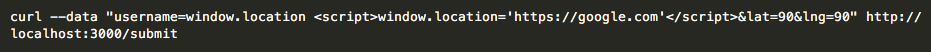

- Location of Issue: This was a problem when the avaliable passengers are displayed on the "/" page. However, the issue arose in the "/submit" POST method.
- Severity: High severity. In this case, the script code I sent as the "username" field simply redirected the page to google.com. However, this could still be problematic, because someone with a malicious intent could redirect the index page to a site showing wrong passenger data. This kind of attack is dangerous in general, because user could think they're looking at the correct page, but really it could be something completely different or wrong. This could even be dangerous, especially if this happened on an imporant website, like a government website, because it could cause people to get wrong information about something potentially important. Additionally, this kind of attack is persistent--once this is sent to the data base, it continues to redirect users to the wrong page.
- Description: This is the command I ran when testing this security issue:

After examining the code, I realized that besides checking whether the "username" field was undefined, there were no limitations to what it could contain. Meaning, there was no check to see whether the "username" was just a name, or whether it was Javascript code, for exmaple. Therefore I decided to send the database JavaScript by curl-ing data to the "/submit" POST method for the application. - Proof of Vulnerability:
The first image shows the data being sent to the server, and you can see that it was indeed inserted into the server because the "vehicles" list is being sent back. In the second image, you can see the result of what happens when the "window.location" script is inserted into the database. For a very brief second, the first part of the image in rendered, and it appears the only passenger in the list is called "window.location". Almost immediately though, the page changes to Google. This shows that the script was in fact inserted into the database, and is causing the page to be reditrected to Google, as expected. - Resolution: While checking whether the "username", "lat", and "lng" fields are undefined, also check whether the username is actually a username one would expect. It looks like this kind of check has actually been commented out in this case--uncommenting that check would likely fix this security issue.
- Location of Issue: This problem arose on the back-end of the product, when the data was being inserted into the database. It became apparent when visiting the "/" home page.
- Severity: High severity. This kind of attack could potentially cause the whole data base to crash, and then the whole application would fail to work.
- Description: This is the command I ran when testing this security issue:
I realized this could be a problem when looking at where data was being sent to the database. There was no limit to the number of documents that could be added to the database. Within the loop, I made sure that the "username" field was changing each time, so that the document wasn't simply being updated, so I added the value of "i" to the end of every entry. - Proof of Vulnerability:
Since there was no limitation in the code to the number of documents that could be inserted, the page should not be able to handle 500,000 entries. Eventually, the database should overload, and the page should not load--as seen in the screen shot above. - Resolution: Before inserting into the database, insert a check in the code to check how many documents have been inserted into the database. If it is over a certain number, then print an error message, or print a message that the database needs to be cleared.
- Location of Issue: Once again, this was a problem when the avaliable passengers are displayed on the "/" page. However, the issue arose in the "/submit" POST method.
- Severity: Medium severity. In this case, when I was testing the security of this code, I sent the server html that contained a user whose name was simply a picture. This could be problematic, because if a driver was looking for passengers, this hack could complicate their job, because the username of the person they are trying to pick up is simply a picture. This could be even more problematic if someone sent more dangerous html.
- Description: This is the command I ran when testing this security issue:
I realized when testing the "username" field when examining the first issue that as long as it wasn't undefined, the "username" field could contain anything, including html code. In this case I decided to send the database html code by using curl to send data to the "/submit" POST method for the application.
- Proof of Vulnerability:
Above is a screenshot of the "Not Uber" page after the image is inserted into the database as the username. There is no username for this passenger, only an image, as expected from the html injection that was performed. - Resolution: While checking whether the "username", "lat", and "lng" fields are undefined, also check whether the username is actually a username one would expect. It looks like this kind of check has actually been commented out in this case--uncommenting that check would likely fix this security issue.